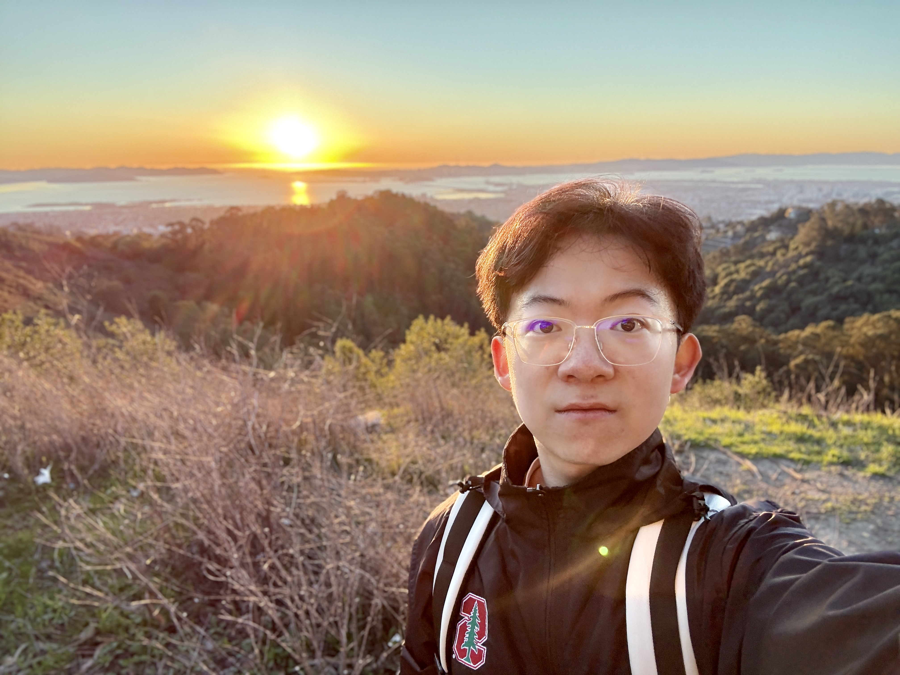
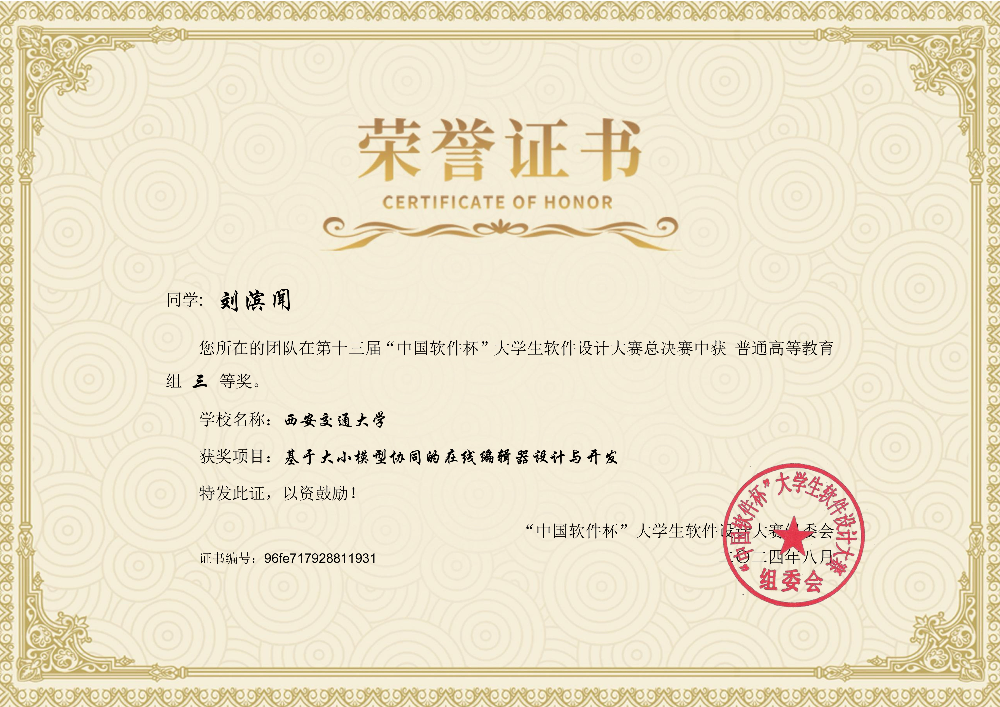
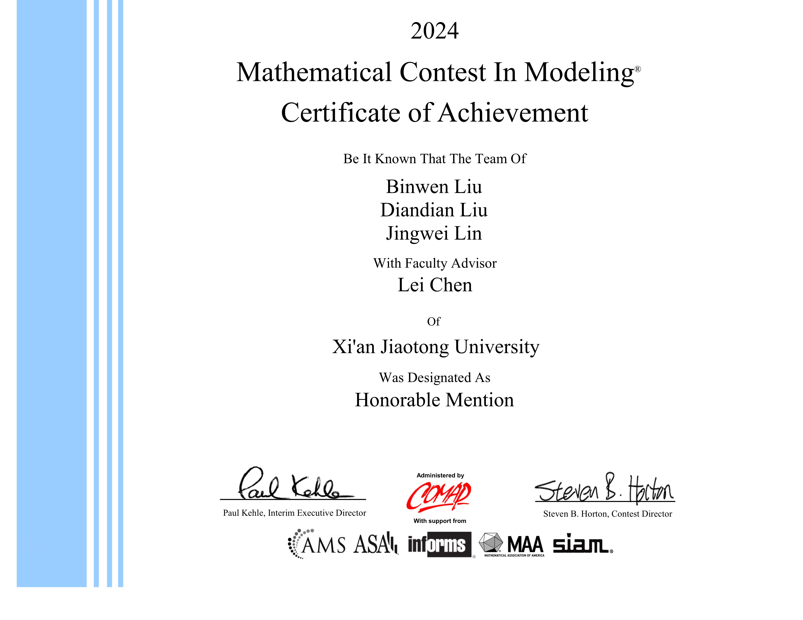
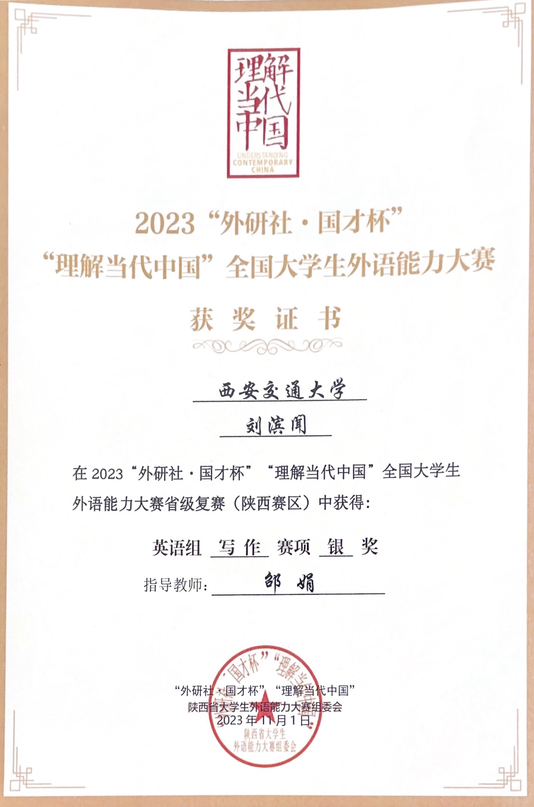

Binwen Liu
AI Researcher & Developer
Xi'an, China
About Me
Strategic AI researcher and developer with a passion for large language models and collaborative innovation. Experienced in creating high-performance applications by leveraging state-of-the-art AI techniques and cross-functional collaboration. Dedicated to continuous learning and contributing to open-source communities while pursuing excellence in both technical implementation and research contributions.

Education
University of California, Berkeley
Jan 2025 - May 2025
Berkeley Global Access Program Visiting Undergraduate Student
- Relevant Coursework: Deep Learning, Advanced LLM Agents, Internet Architecture
Xi'an Jiaotong University
Sep 2022 - Jun 2026 (Expected)
Bachelor of Engineering, Artificial Intelligence (Experimental Class)
- Academic Standing: Top 30% in Department
- Political Status: Member of the Communist Party of China
- Relevant Coursework: Machine Learning, Computer Vision, Natural Language Processing, Data Structures and Algorithms
Project Experiences
Vaiage: AI-Assisted Automated Travel Planning Agent
Feb 2025 - Present
Advanced LLM Agents Course Team Core Developer
- Proposed innovative product concept, conducted in-depth literature research
- Integrated various techniques including model fine-tuning, RAG, and CoT

Rever-Phoenix: LLM Agent-Driven Interactive English Learning Game
Dec 2024 - Mar 2025
Cross-Department Collaboration Project Assistant Developer
- Implemented API integration and prompt engineering
- Designed diverse dialogue interaction logic
Knowledge Graph-Based Intelligent Sleep Medicine Consultation System
Oct 2024 - Jan 2025
Natural Language Processing Course Team Member
- Constructed high-quality knowledge graphs using Neo4j
- Processed user requests with BERT models and completed full-stack development
- Created an online consultation platform integrating user care, real-time reasoning, and scientific solutions
- Project received course scholarship
Online Editor Based on Large-Small Model Collaboration
May 2024 - Aug 2024
University Team Core Member
- Responsible for PaddlePaddle and Wenxin Large Model API integration and full-stack development
- Implemented modular functionality including text expansion/contraction, summarization, refinement, OCR, and style transfer
- Released project as open-source to the community
Research Experiences
Probing In-Context Learning: Impact of Task Complexity and Model Architecture on Generalization and Efficiency
March 2025 - May 2025
First Author
- Conducted comprehensive literature review and experimental analysis
- Analyzed the impact of task complexity and model architecture on generalization and efficiency
Honors & Awards
2023 - 2024
- 13th "China Software Cup" College Student Software Design Competition, National Finals Third Prize
- Mathematical Contest in Modeling (MCM), H Prize (Team Captain), May 2024
- FLTRP Cup National English Ability Competition, Silver Award in Comprehensive Ability
- Asia-Pacific Mathematical Modeling Competition, Third Prize (Team Captain)

China Software Cup

MCM H Prize

FLTRP Cup
Skills & Languages
Hard Skills
- Python, C++, HTML, CSS, JavaScript
- Rust, PyTorch, OpenCV, Git
- LangChain, Hugging Face, Flask
Soft Skills
- Team Organization and Collaboration
- Self-motivated
- Creative Thinking
Languages
- English (CET-6: 623, Duolingo: 135)
- Chinese (Native)
Contact
Xi'an, China
(+86)136-2385-0866
binwenliu.ai@gmail.com